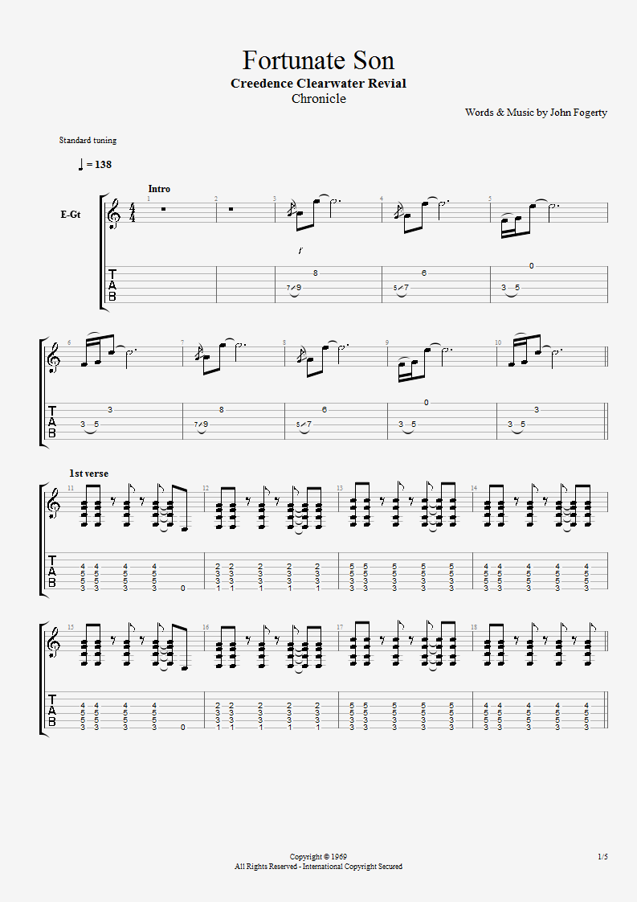

Proud Mary
Tab
Kokken Tor
Tab
I Saw Her Standing There
Black Magick Woman
Tab
Wish You Were Here
Tab
Johnny B Goode
Wonderful Tonight
Wild Horses
Tab
Hey Joe
Sensitive Kind
Tab
Fortunate Son
Tab
Brown Sugar
Tab
Back In The USSR
Tab
Slave
Chords: intro: G E G E G E D C C6 C D A;
vers: A E F#,; refreng: A (med to ganger rollin' on a river)
Left a good job in the city
Workin' for the man ev'ry night and day
And I never lost one minute of sleepin'
Worryin' 'bout the way things might have been
Big wheel keep on turnin'
Proud Mary keep on burnin'
Rollin', rollin', rollin' on the river
Cleaned a lot of plates in Memphis
Pumped a lot of pain down in New Orleans
But I never saw the good side of the city
'Til I hitched a ride on a river boat queen
Big wheel keep on turnin'
Proud Mary keep on burnin'
Rollin', rollin', rollin' on the river
Rollin', rollin', rollin' on the river
If you come down to the river
Bet you gonna find some people who live
You don't have to worry 'cause you have [if you got] no money
People on the river are happy to give
Big wheel keep on turnin'
Proud Mary keep on burnin'
Rollin', rollin', rollin' on the river
Rollin', rollin', rollin' on the river
Some tabs from Ultimate Guitar, where the song is in D instead of A.
FILL 1:
/ means slide into
---------------------------------------| 1
-----/7------7---5---3---5---3---------| 2
---------------------------------------| 3
-----/7------7---5---4---5---4---------| 4
---------------------------------------| 5
---------------------------------------| 6
SOLO: Most of it is alternating between
these two chords: Bar your index finger at the 7th fret.
---------------------------|
---7---------8-------------|
---7---------7-------------|
---7---------9-------------|
---------------------------|
---------------------------|
Chords: vers: D Bm D Bm A D F#m A;
refreng: 3x A E F#m D, A E F#m A
[D]Dette hendte [Bm]meg en gang
[D]Jeg var p? en slags [Bm]resturant
[A]Sammen med min [D]kjæreste og hennes far, han var [F#m]sjømann [A]
Fra samme båt kom kokken Tor
Og satte seg ned ved vårt bord
Og denne historien den handler mest om ham
Da far og datter begynte å snakke privat
Ble jeg sittende som Tors kamerat
Og det virket som han ikke tålte å være på land
For plutslig viste han neven sin
Og sa "Du trenger mere disiplin"
Og jeg mislikte sterkt hans engasjement
Og Tor sa: [A]"Hei du jeg [E]elsker deg din [F#m]jæv[D]el.
[A]Du har så mye [E]sensuali[F#m]tet [D]
[A]Men snart skal du [E]få deg en på [F#m]try[D]net
[A]For stygge gutter er det [E]verste som jeg [F#m]vet" [A]
Tor sa at han elsket meg
Og Tor sa at han hatet meg
Og jeg prøvde å slippe unna øynene hans
Min kjæreste hadde nok et dårlig instinkt
Jeg prøvde å gi henne hint og vink
Men hun og faren snakket stadig vekk uten stans
Og Tor sa: "Hei du jeg elsker deg din jævel.
Du har så mye sensualitet
Men snart skal du få deg en på trynet
For stygge gutter er det verste som jeg vet"
Men endelig snudde faren seg og sa
"Hvordan går det med dere 'a?
Tor, du må'kke plage guttungen med preiket ditt"
Men kokken sa at vi hygget oss
Men nå måtte han kaste loss
Og takk for praten det var jaggu hyggelig gitt
Og jeg sa: "Hei Tor jeg synes du er en jævel
Du har'kke mye sensualitet
Du burde faen meg hatt deg en på trynet
Men det er vel allerede alt for sent"
Riff: E------------------------------------|
B------------------------------------|
G-------------------2----------------|
D--------2/4--2--4-----2/4--4--2-----|
A---------------------------------4--|
E--2--2------------------------------|
E------------------------------------|
B------------------------------------|
G-------------------2----------------|
D--------2/4--2--4--2----------------|
A-------------------0----------------|
E--2--2------------------------------|
Chords:
vers: C7 F7 C7 G7 C C7 F7 Fm7/Ab C7 G7 C7; bridge: F7 G7 F7
C7 F7 C7
Well she was just seventeen and you know what I mean
G7
And the way she looked was way beyond compare
E C7 F7 Fm7/Ab
So how could I dance with another oh,
C7 G7 C7
when I saw her standing there
C7 F7 C7
Well she looked at me and I, I could see
G7
That before too long I'd fall in love with her
E C7 F7
She wouldn't dance with another
Fm7/Ab C7 G7 C7
Oh, when I saw her standing there
F7
Well my heart went boom when I crossed that room
G7 F7
and I held her hand in mine
C7
Well we danced through the night
F7 C7
and we held each other tight
G7
And before too long I fell in love with her
E C7 F7
Now I'll never dance with another
Fm7/Ab C7 G7 C7
Oh, since I saw her standing there
F7
Well my heart went boom when I crossed that room
G7 F7
and I held her hand in mine
C7
Well we danced through the night
F7 C7
and we held each other tight
G7
And before too long I fell in love with her
E C7 F7
Now I'll never dance with another
Fm7/Ab C7 G7 C7
Oh, since I saw her standing there
C7 G7 C7
Since I saw her standing there
C7 C7 G7 C7
Yeah, Well since I saw her standing there
All tabs are in E major, as the record.
Intro:
E7
guitar 1
e--------4-----4--4---|-4---4--4-4-|-------|--------|
b--------3-----3--3---|-3---3--3-3-|-------|--------|
g--------4-----4--4---|-4---4--4-4-|-------%--------|
d--------2-----2--2---|-2---2--2-2-|-------|--------|
a---------------------|------------|-------|--------|
e---------------------|------------|-------|--------|
guitar 2
e---------------------|------------|-------|--------|
b---------------------|------------|-------|--------|
g---------------------|------%-----|-------%--------|
d-----------2-2-------|------------|-------|--------|
a-----------2-2-------|------------|-------|--------|
e--0-0-4-0-------5-4--|------------|-------|--------|
Chords: Dm Am Dm Gm Dm A Dm
Intro: Dm7 (4bars)
Gm/D (4bars)
[Dm7] I got a black magic woman,
I got a black magic [Am7]woman.
Yes, I got a [Dm7]blac magic woman,
she's got me so blind I cant [Gm7]see
But she's a [Dm7]black magic woman and she's
[A7]tryin' to make a devil out of [Dm7]me.
[Dm7]Don't turn your back on me, baby.
Don't turn your back on me, ba[Am7]by
Yes, don't turn your [Dm7]back on me, baby,
Don't mess around with your [Gm7]tricks.
Don't turn your [Dm7]back on me, baby, cause you
[A7]might just wake up my magic [Dm7]sticks
solo
You got your spell on me, baby.
You got your spell on me, ba[Am7]by.
Yes, you got your [Dm7]spell on me, baby
Turnin' my heart into [Gm7]stone
I [Dm7]need you so bad,
[A7]magic woman I can't leave you a [Dm7]lone...
Intro (Organ Tab for Guitar):
|------------------------------------------|
|-13h15----13h15----12h15--13h15----13h15--|
|-------14-------14--------------14--------|
|------------------------------------------|
|------------------------------------------|
|------------------------------------------|
|------------------------------------------|
|-13h15----13h15----12h15--13h15----13h15--|
|-------14-------14--------------14--------|
|------------------------------------------|
|------------------------------------------|
|------------------------------------------|
Chords: intro: 2x Em7 G, 2x Em7 A, G;
vers: C D Am G D C Am G; refreng: C D Am G C Am G
C D
So, so you think you can tell
AM
Heaven from Hell
G
Blue Skies from pain
D
Can you tell a green field
C
From a cold steel rail
AM
A smile from a veil
G
So you think you can tell
C
Did they get you to trade
D
Your heroes for ghosts
AM
Hot Ashes for trees
G
Hot air for a cool breeze
D
Cold comfort for change
C
Did you exchange?
AM
A walk on part in the war
G
For a lead role in a cage
C D
How I wish, how I wish you were here
Am G
We're just two lost souls swimming in a fish bowl
D
Year after year.
C
Running over the same old ground.
AM
What have we found the same old fears
G
Wish you were here...
e---------------------3-------------------3---|
B---------------------3-------------------3---|
G---------------------0-------0-----------0---|
D-------------0--2----2----2-----2--0-----0---| * 2
A------0h2------------0-------------------2---|
E---3-----------------x-------------------3---|
(Skip the first note ONLY on this repeat):
Strum a few Times Strum a few Times
e---------------------3-------------------3---|
B---------------------3-------------------3---|
G---------------------0-------------------2---|
D-------------0--2----2----2--0-----------2---| * 2
A------0h2------------0----------2--0-----0---|
E---3-----------------x-------------------0---|
e-----------------3---|
B-----------------3---|
G-----------------0---|
D-----------------0---|
A---0—2p0------2--2---|
E---------3-3—-3--3---|
(Guitar 1 continues to play intro behind Guitar 2’s solo).
Solo: (2nd Guitar)
e----------------------------------------------------------|
B----------3---5---0---3-----0-----------------------------|
G-----2/4-------------------------2---0--------------------|
D------------------------------------------0---------0---0-|
A-----------------------------------------------1/2--------|
E----------------------------------------------------------|
e----3/5-5/3-----------------------------------------------|
B----3/5-5/3----3/5-5/3---------3/5-5/3---3---(/0)---------|
G---------------2/4-4/2----0----2/4-4/2p0-0----------------|
D----------------------------------------------------------|
A----------------------------------------------------------|
E----------------------------------------------------------|
e-------------------------------------------------------------------|
B----------3---0---5----5b---0----3--------------3-----5------------|
G----2/4------------------------------2----4b----------------4b---2-|
D-------------------------------------------------------------------|
A-------------------------------------------------------------------|
E-------------------------------------------------------------------|
e-------------------------------------------------------------------|
B---------3----0----5-----5b-----5---3--5---------------------------|
G----2/4------------------------------------2-------4b----2---------|
D-------------------------------------------------------------------|
A-------------------------------------------------------------------|
E-------------------------------------------------------------------|
Electric guitar..
Chords: vers/refreng: A D A E A
Husk: tighte gitarer som følger trommene.
Way down in Louisiana down to New Orleans
Way back up in the woods among the evergreens
There stood a log cabin made of earth and wood
Where lived a country boy named Johnny B. Goode
Who never ever learned to read or write so well
But he could play a guitar just like he's ringin' a bell
He used to carry his guitar in a gunny sack
And sit beneath the trees by the railroad track
The engineers would see him sittin' in the shade
Strummin' to the rhythm that the driver made
When people passed him by they would stop and say
Oh my that little country boy sure can play
Well his mama told him one day you will be a man
You will be the leader of a big old band
People gonna come from miles around
To listen to your playin' till the sun goes down
And one day maybe your name gonna be in lights
Sayin' Johnny B Goode tonight
Chords: intro: G D/F# C D G D/F# C D;
vers:
C D G D/F# C, D C D G Bm/F# Em C D G;
bro: C D G Bm/F# Em C D C D G
G D/F# C D G D/F# C D
G D/F#
It's late in the evening
C D
She's wondering what clothes to wear
G D/F#
She puts on her make up
C D
And brushes her long blonde hair
C D
And then she asks me
G Bm/F# Em
Do I look alright
C D G D/F# C D
And I say yes, you look wonderful tonight
G D/F#
We go a party
C D
And everyone turns to see
G D/F#
This beautiful lady
C D
That's walking around with me
C D
And then she asks me
G Bm/F# Em
Do you feel alright
C D G
And I say yes, I feel wonderful tonight
C
I feel wonderful
D G Bm/F# Em
Because I see the love light in your eyes
C D
And the wonder of it all
C D
Is that you just don't realize
G D/F# C D G D/F# C D
How much I love you
G D/F#
It's time to go home now
C D
And I've got an aching head
G D/F#
So I give her the car keys
C D
She helps me to bed
C D
And then I tell her
G Bm/F# Em
As I turn out the light
C D G Bm/F# Em Em/D
I say my darling, you were wonderful tonight
C D G D/F# C D G D/F# C D G
Oh my darling, you were wonderful tonight
Chords: intro: G Am7 G Gsus Am7 G;
vers: Bm G Gsus, Bm G Gsus, Am G C-D, G Gsus G D Dsus2 D C;
refreng: Am G C-D G F G-C, Bm, Am G C-D G F G-C
(NB: ingen bro etter 2.refreng!)
Bm G Gsus Bm G Gsus
Childhood living is easy to do
Am G C D G Gsus G D Dsus2 D C
The things you wanted I brought them for you
Bm G Gsus Bm G Gsus
Graceless lady you know who I am
Am G C D G Gsus G D Dsus2 D
You know I can't let you slide through my hands
Am G C D G F G C Bm
wild horses couldn't drag me a- way
Am G C D G F G C
wild wild horses couldn't drag me a- way
Bm G Bm G
I watched you suffer a dull aching pain
Am C D G Dsus2 C
now you decided to show me the same
Bm G Bm G
no sweet thing exits or of stage lines
Am C D G Dsus2 C
could make me feel better or treat you unkind
Am G C D G F G C Bm
wild horses couldn't drag me a- way
Am G C D G F G C
wild wild horses couldn't drag me a- way
solo
Bm G Bm G
I know I've dreamed you a sin and a lie
Am C D G D C
I have my freedom but I don't have much time
Bm G Bm G
Faith has been broken tears must be cried
Am C D G D C
Lets do some living after we died
Am C D G F C
wild horses couldn't drag me away
Am C D G F C
wild wild horses we'll ride them some day
Am C D G F C
wild horses couldn't drag me away
Am C D G F C G
wild wild horses we'll ride them some day
Chords:
G/D(1) Am/G G/D D11 G/D(3) G1 G2 Bm Am G C D F
D --5------7---12----10----9----0----0---4----2---0--5--7--10---
B --0------5---12----10----8----1----0---3----1---0--5--7--10---
G --4------5---12-----9----7----0----2---4----2---0--5--7--10---
D --0------7----0-----0----0----2----2---4----2---0--5--7--10---
G --0-----------0-----0----0----0----0------------0--5--7--10---
D --0------5----0-----0----0----0----0---4----2---0--5--7--10---
Dtailed acoustic instructions.
Intro |E Em7 C#4/E | E
C G D A E E
Verse 1 Hey Joe, where you goin’ with that gun of yours?
C G D A E E
Hey Joe, I said where you goin’ with that gun in your hand,
C G
I’m goin’ down to shoot my lady,
D A E
E
You know I caught her messin’ ‘round with a – nother man.
C G
Yeah, I’m goin’ down to shoot my lady
D A E
You know I caught her messin’ ‘round with another man
E
Huh! And that ain’t cool.
C G D A E
Verse 2 A hey Joe, I heard you shot your woman down,
E
You shot her down now,
C G D A E
A hey Joe, I heard you shot your old lady down,
E
You shot her down in the ground, Yeah”
C G
Yes, I did, I shot her,
D A E
E
You know I caught her messin’ ‘round, messin’ ‘round town,
C G
Uh, yes I did, I shot her.
D A E
You Know I caught my old Lady messin’ ‘round town,
E
And have her the gun,
And I shot her.
C G D A E
Guitar solo Alright, shoot her one more time again baby!
C G D A E
Yeah! Dig it.
C G D A E E
Oh alright.
C G
Verse 3 Hey Joe
D A E E
Where you gonna run to now, where you gonna go?
C G
Hey Joe, I said
D A E E
Where you gonna run to now, where you gonna go?
C G
I’m goin’ way down south,
D A E E
Way down to Mexico way.
C G
I’m goin’ way down south,
D A E
Way down where I can be free,
E
Ain’t no one gonna find me.
C G
Outro Ain’t no hang-man gonna,
D A E
He ain’t gonna put a rope around me,
E
You better believe it right now,
I gotta go now,
C G
Hey Joe,
D A E
You better run on down
E
Goodbye everybody. Ow!
Chords: intro: Gm Cm D7 Cm, vers: Gm Cm D#7-D7 Gm
Gm
Don't take her for granted, she had
Gm
a hard time
Cm
Don't misunderstand her or play
Gm
with her mind
Gm
Treat her so gently, it will pay you
Cm
in time
D#7 D7
You've gotta know she's the
Gm
sensitive kind
(repeat the same chords & keep the same rythm)
Tell her you love her each and
every night
You will discover she will treat
you right
If you believe, I know you will find
There ain't nothin' like the
sensitive kind
Solo
Chords used: Gm/Gm/Cm/Gm/Gm/Cm/D#7-D7/Gm (repeat twice)
( again repeat the same chords)
She gets so lonely waitin' for you
You are the only thing to help
her through
Don't take her for granted
She has a hard time
You got to know she's the
sensitive kind
You got to know she's the
sensitive kind
Gm Cm D7* D7 D#7
e:-3-----3-----5----------------|
B:-3-----4-----7-----3-----4----|
G:-3-----5-----5-----5-----6----|
D:-5-----5-----7-----4-----5----|
A:-5-----3-----5-----5-----6----|
E:-3----------------------------|
Chords: vers: F# E B F# E B F#; refreng: 2x F# C# B F#
Verse
[F#]Some folks are born, [E]made to wave the flag
[B]Ooh they're red white and [F#]blue
[F#]And when the band plays [E]hail to the chief
[B]Ooh they point the cannons at [F#]you, y'all
Chorus
[F#]It aint me, [C#]It aint me, [B]I aint no senators [F#]son y'all
[F#]It aint me, [C#]It aint me, [B]I aint no fortunate [F#]one , no
[F#]Some folks are born, [E]silver spoon in hand
[B]Lord they don't help [F#]themselves, y'all
[F#]But when the tax man [E]comes to the door
[B]Lord the house looks like a rummage [F#]sale yeah
[F#]It aint me, [C#]It aint me [B]I aint no millionaires [F#]son, no
[F#]It aint me, [C#]It aint me [B]I aint no fortunate [F#]one, no
[F#]Some folks inherit [E]star spangled eyes
[B]Ooh they send you down to [F#]war y'all
[F#]It aint me, [E]It aint me
[F#]I'm no fortunate [F#]one no
Instructions with tab.
Associated tabs:
E---------------------------------------------------------------------
B--------8----------6----------------5------------3----------------
G---------------------------------------------------------------------
D----/9--------/7------------3/5-----------2/3--------------------
A----------------------------------------------------------1----------
E----------------------------------------------------------------3----
G, F, C, G
E----------------------------------
B----------------------------------
G-------------------5-------------
D----5------3------5------5-----
A----5------3------3------5-----
E----3------1--------------3-----
G, D, C, C
E-----------------------------------
B-----------------------------------
G-----------7-----5---------------
D----5-----7-----5-----5---------
A----5-----5-----3-----5---------
E----3-------------------3---------
E--------------------------------------
B----/6-----5------\1------1/3-----
G----/7-----6------\2------2/4-----
D--------------------------------------
A--------------------------------------
E--------------------------------------
Alternative instruction.

Eb-C...) m/solo, refreng, vers, refreng, deretter gjentagelse av chords i refrenget (G C).
Chords: intro1: C-G C-Csus; intro2: Eb-Eb9-Eb, C-Csus, Ab Bb C;
vers: C F C Bb C (Bb); refreng: G C G C
Husk: tighte gitarer som følger trommene.
C C* C C* C C C* C
Gold coast slave ship bound for cotton fields
F F* F F* F F* F
Sold in a market down in New Orleans
C C* C C* C C* C
Scarred old slaver know he's doin alright
Bb C Bb G
Hear him whip the women just around midnight
G C C* C C* C
Ah brown sugar how come you taste so good
G C C* C C* C
Ah brown sugar, just like a young girl should
C C* C C* C C* C
Drums beating cold English blood runs hot
F F* F F* F F* F
Lady of the house wondrin where its gonna stop
C C* C C* C C* C
House boy knows that he's doin alright
Bb C Bb G
You should a heard him just around midnight
G C C* C C* C
Ah brown sugar how come you taste so good
G C C* C C* C
Ah brown sugar, just like a black girl should
4x intro2 m/solo
C C* C C* C C* C
I bet your mama was a tent show queen
F F* F F* F F* F
And all her boyfriends were sweet sixteen
C C* C C* C C* C
I'm no schoolboy but I know what I like
Bb C Bb G
You should have heard them just around midnight
G C C* C C* C
Ah brown sugar how come you taste so good
G C C* C C* C
Ah brown sugar, just like a young girl should
After each round:
e|-------------------------------------------------------------------------|
B|---8-----9-----5------6-----1----3------5------6-----5---p-----t---------|
G|---8----8------5-----5------1----3------5-----5------5----l-----w--------|
D|---8----8------5-----5------1----3------5-----5------5-----a-----i-------|
A|-6----6------3-----3------------------3------3------3-------y-----c------|
E|-------------------------------------------------------------------e-----|
Guitar 1
e-----------------------------|
B--13--12----5--5---5-6--5----|
G--12--12----5--5---5-5--5----| x4
D--14--12----5--5---5-7--5----|
A-----------------------------|
E-----------------------------|
Guitar 2
e-----------------------------|
B-----------------------------|
G-----------------------------| x4
D------------------------3-5--|
A--------------------3-5------|
E-----------------------------|
Guitar 1
e----------------|---------------|-------------------------------|
B-----10--10-8---|--5--5-6--6-5--|--1--2-1-2-4-3--6--6-6--5------|
G-----8---8--8---|--5--5-5--5-5--|--1--3-1-3-3-3--5--5-5--5------| x2
D-----10--10-10--|--5--5-5--5-5--|----------------5--5-5--5------|
A----------------|---------------|-------------------------------|
E----------------|---------------|-------------------------------|
Guitar 2
e----------------|---------------|--4--4-4-4-6-6--8---8--8---8---|
B--8--8-8--8--8--|--5--5-5--5-5--|--4--4-4-4-6-6--8---8--8---8---|
G--8--8-8--8--8--|--5--5-5--5-5--|--5--5-5-5-7-7--9---9--9---9---| x2
D--8--8-8--8--8--|--5--5-5--5-5--|--6--6-6-6-8-8--10--10-10--10--|
A--6--6-6--6--6--|--3--3-3--3-3--|--6--6-6-6-8-8--10--10-10--10--|
E----------------|---------------|--4--4-4-4-6-6--8---8--8---8---|
Verse 1:
Guitar 1
e---------------------------|-------------------------------------|
B----5-----5-------5-----5--|----10-------10--------10--------10--|
G----5-----5-------5-----5--|----10-------10--------10--------10--|
D----5-----5-------5-----5--|----10-------10--------10--------10--|
A----3-----3-------3-----3--|----8--------8---------8---------8---|
E---------------------------|-------------------------------------|
Guitar 2
e---------------------------|-------------------------------------|
B----5-----5-------5-----5--|----10-------10---------10-------10--|
G----5-----5-------5-----5--|----10-------10---------10-------10--|
D----5h7p5---------5h7p5----|----10h12p10------------10h12p10-----|
A---------------------------|-------------------------------------|
E---------------------------|-------------------------------------|
"Gold Coast slave ship..." "Sold in a market down in New Orleans"
Guitar 1
e-----------------------------|--------------------------|
B--5---5--------5---5---5--5--|--3---3--3--5--5-5--5--5--|
G--5---5--------5---5---5--5--|--3---3--3--5--5-5--5--5--|
D--5---5--------5---5---5--5--|--3---3--3--5--5-5--5--5--|
A--3--------------------3-----|--1---------3----------3--|
E-----------------------------|--------------------------|
Guitar 2
e-----------------------------|--------------------------|
B------5-----5-------5-----5--|----3-----3----5-5--5--5--|
G------5-----5-------5-----5--|----3-----3----5-5--5--5--|
D------5h7p5---------5h7p5----|----3h5p3------5-5--5--5--|
A-----------------------------|--------------------------|
E-----------------------------|--------------------------|
"Scarred up slaver knows..." "Hear him whip the women..."
Chorus:
Guitar 1
e--3------------------------|--------------------------------|
B--3------------------------|--5---5-6--5-6----5---5-6--5-6--|
G--0------------------------|--5---5-5--5-5----5---5-5--5-5--|
D--0------------------------|--5---5-7--5-5----5---5-7--5-5--|
A--2------------------------|--------------------------------|
E--3------------------------|--------------------------------|
Guitar 2
e---------------------------|--------------------------------|
B---------------------------|------5----5----------5----5----|
G--------------------5------|------5----5----------5----5----|
D----------5-5----8----8----|------5h7--5----------5h7--5----|
A--------5------------------|--------------------------------|
E----5/7--------------------|--------------------------------|
"Brown Sugar" "How come you taste so good?"
Guitar 1
e---------------------------|--------------------------------|
B---------------------------|--5---5-6--5-6----5---5-6--5-6--|
G----------------5-3--------|--5---5-5--5-5----5---5-5--5-5--|
D-----------3----5-3--5-----|--5---5-7--5-5----5---5-7--5-5--|
A-------3/5---5-------5-----|--------------------------------|
E--3------------------------|--------------------------------|
Guitar 2
e---------------------------|--------------------------------|
B---------------------------|------5h6--5----------5h6--5----|
G--------------------5------|------5----5----------5----5----|
D----------5-5----8----8----|------5h7--5----------5h7--5----|
A--------5------------------|--------------------------------|
E----5/7--------------------|--------------------------------|
"Brown Sugar" "Just like a young girl should"
Break:
Guitar 1
e----------------|---------------|-------------------------------|
B-----10--10-8---|--5--5-6--6-5--|--1--2-1-2-4-3--6--6-6--5------|
G-----8---8--8---|--5--5-5--5-5--|--1--3-1-3-3-3--5--5-5--5------|
D-----10--10-10--|--5--5-5--5-5--|----------------5--5-5--5------|
A----------------|---------------|-------------------------------|
E----------------|---------------|-------------------------------|
Guitar 2
e----------------|---------------|--4--4-4-4-6-6--8---8--8---8---|
B--8--8-8--8--8--|--5--5-5--5-5--|--4--4-4-4-6-6--8---8--8---8---|
G--8--8-8--8--8--|--5--5-5--5-5--|--5--5-5-5-7-7--9---9--9---9---|
D--8--8-8--8--8--|--5--5-5--5-5--|--6--6-6-6-8-8--10--10-10--10--|
A--6--6-6--6--6--|--3--3-3--3-3--|--6--6-6-6-8-8--10--10-10--10--|
E----------------|---------------|--4--4-4-4-6-6--8---8--8---8---|
Verse 2:
Guitar 1
e---------------------------|-------------------------------------|
B----5------5-----5------5--|---10-11--10-11---10---10-11--10-11--|
G----5------5-----5------5--|---10-10--10-10---10---10-10--10-10--|
D----5------5-----5------5--|---10-12--10-10---10---10-12--10-10--|
A----3------------3---------|-------------------------------------|
E---------------------------|-------------------------------------|
Guitar 2
e---------------------------|-------------------------------------|
B----5-----5-------5-----5--|----10-------10---------10-------10--|
G----5-----5-------5-----5--|----10-------10---------10-------10--|
D----5h7p5---------5h7p5----|----10h12p10------------10h12p10-----|
A---------------------------|-------------------------------------|
E---------------------------|-------------------------------------|
"Drums beating..." "Lady of the house wondering..."
Guitar 1
e-----------------------------|--------------------------|
B--5---5---5-6---5-------5----|--3---3--3--5--5-5--5--5--|
G--5---5---5-5---5-------5----|--3---3--3--5--5-5--5--5--|
D--5---5---5-5---5--7-5--5----|--3---3--3--5--5-5--5--5--|
A--3--------------------------|--1---------3----------3--|
E-----------------------------|--------------------------|
Guitar 2
e-----------------------------|--------------------------|
B------5-----5-------5-----5--|----3-----3----5-5--5--5--|
G------5-----5-------5-----5--|----3-----3----5-5--5--5--|
D------5h7p5---------5h7p5----|----3h5p3------5-5--5--5--|
A-----------------------------|--------------------------|
E-----------------------------|--------------------------|
"House boy knows he's..." "You shoulda heard him just..."
Chorus 2:
Guitar 1
e---------------------------|--------------------------------|
B---------------------------|--5---5-6--5-6----5---5-6--5-6--|
G----------------5-3--------|--5---5-5--5-5----5---5-5--5-5--|
D-----------3----5-3--5-----|--5---5-7--5-5----5---5-7--5-5--|
A-------3/5---5-------5-----|--------------------------------|
E--3------------------------|--------------------------------|
Guitar 2
e---------------------------|--------------------------------|
B---------------------------|------5h6--5----------5h6--5----|
G--------------------5------|------5----5----------5----5----|
D----------5-5----8----8----|------5h7--5----------5h7--5----|
A--------5------------------|--------------------------------|
E----5/7--------------------|--------------------------------|
"Brown Sugar" "How come you taste so good, now?"
Guitar 1
e---------------------------|--------------------------------|
B---------------------------|--5---5-6--5-6----5---5-6--5-6--|
G----------------5-3--------|--5---5-5--5-5----5---5-5--5-5--|
D-----------3----5-3--5-----|--5---5-7--5-5----5---5-7--5-5--|
A-------3/5---5-------5-----|--------------------------------|
E--3------------------------|--------------------------------|
Guitar 2
e---------------------------|--------------------------------|
B---------------------------|------5h6--5----------5h6--5----|
G--------------------5------|------5----5----------5----5----|
D----------5-5----8----8----|------5h7--5----------5h7--5----|
A--------5------------------|--------------------------------|
E----5/7--------------------|--------------------------------|
"Brown Sugar" "Just like a young girl should, now"
Break x4
Chorus 2 x1 (with "black girl")
Verse 3:
Guitar 1
e-----------------------------|-----------------------------------------|
B-----5---5----5--5--5h6-5----|--10--10----10-11----10h11--10--11-10----|
G-----5---5----5--5--5---5----|--10--10----10-10----10-----10--10-10----|
D-----5---5----5--5--5h7-5----|--10--10----10-12----10h12--10--12-10----|
A-----------------------------|-----------------------------------------|
E-----------------------------|-----------------------------------------|
Guitar 2
e-----------------------------|-----------------------------------------|
B----5-6--5---5----5--5-6--5--|--10--11---11-10-11---10--10--10-11--10--|
G----5-7--5---5----5--5-7--5--|--10--10---10-10-10---10--10--10-10--10--|
D----5-7--5-7-5----5--5-7--5--|--10--12---12-10-12---10--10--10-12--10--|
A-----------------------------|-----------------------------------------|
E-----------------------------|-----------------------------------------|
"I bet your mamma was a..." "And all her boyfriends were sweet sixteen"
Guitar 1
e-----------------------------|---------------------------|
B----5h6--5---x-5--5-6--5-6---|--3---3--3--5--5-5--5--5---|
G----5----5---x-5--5-5--5-5---|--3---3--3--5--5-5--5--5---|
D----5----5---x-5--5-5--5-5---|--3---3--3--5--5-5--5--5---|
A-----------------------------|--1---------3----------3---|
E-----------------------------|---------------------------|
Guitar 2
e-----------------------------|---------------------------|
B----5-6--5---5----5--5-6--5--|----3-----3--5--5-5--5--5--|
G----5-7--5---5----5--5-7--5--|----3-----3--5--5-5--5--5--|
D----5-7--5-7-5----5--5-7--5--|----3h5p3----5--5-5--5--5--|
A-----------------------------|---------------------------|
E-----------------------------|---------------------------|
Chorus 2 x1
Break 2:
Guitar 1
e------------------------------|-----------------------------|
B----12----12-13p12-12-13--12--|----5-6--5-6---5---5-6--5-6--|
G----12----12-12----12-12--12--|----5-5--5-5---5---5-5--5-5--|
D----12----12-14p12-12-14--12--|----5-7--5-7---5---5-7--5-7--|
A------------------------------|-----------------------------|
E------------------------------|-----------------------------|
Guitar 2
e------------------------------|-----------------------------|
B------------------------------|----5-5--5---5--5------------|
G--------0--------3--5b-3------|----5-5--5---5--5-5--5--5----|
D----------5v------------------|----5-7--5---5--5-7--8--7----|
A------5-----------------------|-----------------------------|
E--5/7-------------------------|-----------------------------|
Guitar 1
e----------------------------------------|------------------------------|
B-----12---13--12-13--12---12-13--12-13--|--5---5-6--5-6--5---5-6--5-6--|
G-----12---12--12-12--12---12-12--12-12--|--5---5-5--5-5--5---5-5--5-5--|
D--14-12---14--12-14--12---12-14--12-14--|--5---5-7--5-7--5---5-7--5-7--|
A----------------------------------------|------------------------------|
E----------------------------------------|------------------------------|
Guitar 2
e----------------------------------------|------------------------------|
B----------------------------------------|--5---5-6--5-6--5---5-6--5-6--|
G-------------0-------5b7-b7-b7-b7r-3----|--5---5-5--5-5--5---5-5--5-5--|
D---------------5v-----------------------|--5---5-7--5-7--5---5-7--5-7--|
A-----------5----------------------------|------------------------------|
E--3----5/7------------------------------|------------------------------|
Guitar 1
e----------------------------|----------------------------|
B----3-4--3--4----3-4--3--4--|----5-6--5--6----5-6--5--6--|
G----3-3--3--3----3-3--3--3--|----5-5--5--5----5-5--5--5--| x2
D----3-5--3--5----3-5--3--5--|----5-7--5--7----5-7--5--7--|
A----------------------------|----------------------------|
E----------------------------|----------------------------|
Guitar 2
e----------------------------|----------------------------|
B----3-4--3-4--4--4-3--------|----5-6--5--6----5-6--5--6--|
G----3-3--3-3--3--3-3--------|----5-5--5--5----5-5--5--5--| x2
D----3-5--3-5--6--5-3--------|----5-7--5--7----5-7--5--7--|
A----------------------------|----------------------------|
E----------------------------|----------------------------|
Guitar 1
e-------------------------------|------------------------------------|
B----3-4--3--4------3-4--3--4---|----5-6--5--6-------5-6--5--6-------|
G----3-3--3--3------3-3--3--3---|----5-5--5--5-------5-5--5--5-------| x3
D----3-5--3--5------3-5--3--5---|----5-7--5--7-------5-7--5--7-------|
A-------------------------------|------------------------------------|
E-------------------------------|------------------------------------|
Guitar 2
e----3--------------3------------|----8---------------8--------------|
B----3---3----------3---3--------|----8---8-----------8---8----------|
G----------5-3------------5-3----|----------10-8------------10-8-----| x3
D--------------5--------------5--|---------------10--------------10--|
A--------------------------------|-----------------------------------|
E--------------------------------|-----------------------------------|
Guitar 1
e-------------------------------|------------------------------------|
B----3-4--3--4------3-4--3--4---|----5--5-6---5-5-6---5-5-6-5--------|
G----3-3--3--3------3-3--3--3---|----5--5-5---5-5-5---5-5-5-5--------|
D----3-5--3--5------3-5--3--5---|----5--5-7---5-5-7---5-5-7-5--------|
A-------------------------------|------------------------------------|
E-------------------------------|------------------------------------|
Guitar 2
e----3-------------3------------|----------8---------8--8-8-------8--|
B----3---3---------3---3--------|----------8---------8--8-8-------8--|
G----------5-3-----------5-3----|----10b12----10b12---------10b12----|
D--------------5-------------5--|------------------------------------|
A-------------------------------|------------------------------------|
E-------------------------------|------------------------------------|
Chords: vers: A D C D; refreng: A C D A D-Eb-E,
bridge: D A D D/C# D/C D/B E D A D-Eb-E
E E7
A D
Flew in from Miami Beach B. O. A. C.
C D
Didn't get to bed last night
A D
On the way the paperback was on my knee
C D
Man I had a dreadful flight
A
I'm back in the U.S.S.R.
C D
You don't know how lucky you are boy
A D Eb E
Back in the U.S.S.R.
A D
Been away so long I hardly knew the place
C D
Gee it's good to be back home
A D
Leave it till tomorrow to unpack my case
C D
Honey disconnect the phone
A
I'm back in the U.S.S.R.
C D
You don't know how lucky you are boy
Gadd9
Back in the U.S.
Back in the U.S.
A
Back in the U.S.S.R.
D
Well the Ukraine girls really knock me out
A
They leave the West behind
D D/C# D/C D/B
And Moscow girls make me sing and shout
E D A D Eb E
That Geogia's always on my mi mi mi mi mi mi mind [Oh come on!]
[solo]
I'm back in the U.S.S.R.
C D
You don't know how lucky you are boy
A
Back in the U.S.S.R.
D
Well the Ukraine girls really knock me out
A
They leave the West behind
D D/C# D/C D/B
And Moscow girls make me sing and shout
E D A D Eb E
That Geogia's always on my mi mi mi mi mi mi mind
A D
Oh, show me 'round your snow-peaked mountains way down south
C D
Take me to your daddy's farm
A D
Let me hear your balalaikais ringing out
C D
Come and keep your comrade warm
A
I'm back in the U.S.S.R.
C D
You don't know how lucky you are boy
A D Eb E A
Back in the U.S.S.R.
e|------- ------- ------- -------|------- 8------ ------- -------|
B|-------------------------------|-------------------------------|
G|-------------------------------|-------------------------------|
D|-------------------------------|------------8\5-----B7\-x------|
A|-------------------------------|-------------------------------|
E|-------------------------------|-------------------------------|
00:09
x x x x x x x x x x x x x x x x
E E7
e|------- ------- ------- 0------|------- ------- ------- 0------|
B|-------------------------------|------------------------3------|
G|-------------------------------|------------------------1------|
D|-------------------------------|------------------------0------|
A|-------------------------------|------------------------2------|
E|-------------------------------|-------------------------------|
e|------- ------- ------- -------|------- ------- ------- -------|
B|3---3---3---3---3---3---3---3--|3---3---3---3---3---3---3---3--|
G|1---1---1---1---1---1---1---1--|1---1---1---1---1---1---1---1--|
D|0---0---0---0---0---0---0---0--|0---0---0---0---0---0---0---0--|
A|2---2---2---2---2---2---2---2--|2---2---2---2---2---2---2---2--|
E|0---0---0---0---0---0---0---0--|0---0---0---0---0---0---0---0--|
00:16
A5 D5
e|------- ------- ------- -------|------- ------- ------- -------|
B|-------------------------------|-------------------------------|
G|-------------------------------|7---7---7---7---7---7---7---7--|
D|7---7---7---7---7---7---7---7--|7---7---7---7---7---7---7---7--|
A|7---7---9---7---7---7---9---7--|5---5---5---5---5---5---5---5--|
E|5---5---5---5---5---5---5---5--|-------------------------------|
Flew from Beach Didn't
in Miami B O A C
C5 D5
e|------- ------- ------- -------|------- ------- ------- -------|
B|-------------------------------|-------------------------------|
G|5---5---5---5---5---5---5---5--|7---7---7---7---7---7---7---7--|
D|5---5---5---5---5---5---5---5--|7---7---7---7---7---7---7---7--|
A|3---3---3---3---3---3---3---3--|5---5---5---5---5---5---5---5--|
E|-------------------------------|-------------------------------|
get to bed last night On
A5 D5
e|------- ------- ------- -------|------- ------- ------- -------|
B|-------------------------------|-------------------------------|
G|-------------------------------|7---7---7---7---7---7---7---7--|
D|7---7---7---7---7---7---7---7--|7---7---7---7---7---7---7---7--|
A|7---7---7---7---7---7---7---7--|5---5---5---5---5---5---5---5--|
E|5---5---5---5---5---5---5---5--|-------------------------------|
the way the paper bag was on my knee Man
e|------- ------- ------- -------|------- ------- ------- -------|
B|-------------------------------|-------------------------------|
G|-------------------------------|-------------------------------|
D|7-----------7-----------7------|12----------12----------12-----|
A|7-----------7-----------7------|12----------12----------12-----|
E|5-----------5-----------5------|10----------10----------10-----|
C5 D5
e|------- ------- ------- -------|------- ------- ------- -------|
B|-------------------------------|-------------------------------|
G|5---5---5---5---5---5---5---5--|7---7---7---7---7---7---7---7--|
D|5---5---5---5---5---5---5---5--|7---7---7---7---7---7---7---7--|
A|3---3---3---3---3---3---3---3--|5---5---5---5---5---5---5---5--|
E|-------------------------------|-------------------------------|
I had a dreadful flight I'm back the
in U. S. S. R.
e|------- ------- ------- -------|------- ------- ------- -------|
B|-------------------------------|-------------------------------|
G|-------------------------------|-------------------------------|
D|10----------10----------10-----|12----------12----------12-----|
A|10----------10----------10-----|12----------12----------12-----|
E|-8-----------8-----------8-----|10----------10----------10-----|
00:29
A C
e|------- ------- ------- -------|------- ------- ------- -------|
B|-------------------------------|-------------------------------|
G|-------------------------------|-------------------------------|
D|7---7---7---7---7---7---7---7--|10--10--10--10--10--10--10--10-|
A|7---7---7---7---7---7---7---7--|10--10--10--10--10--10--10--10-|
E|5---5---5---5---5---5---5---5--|-8---8---8---8---8---8---8---8-|
You know you are,
don't how
lucky
e|------- ------- ------- -------|------- ------- ------- -------|
B|-------------------------------|-------------------------------|
G|----2-------0------------------|---5--------3------------------|
D|----2-------2-------4----------|---5--------5-------7----------|
A|0-----------------------3H4P3H4|3-----------------------6--H--7|
E|-------------------------------|-------------------------------|
D
e|------- ------- ------- -------|------- ------- ------- -------|
B|-------------------------------|-------------------------------|
G|-------------------------------|-------------------------------|
D|12--12--12--12--12--12--12--12-|12-----------------------------|
A|12--12--12--12--12--12--12--12-|12-----------------------------|
E|10--10--10--10--10--10--10--10-|10-\---------------------------|
boy Back in U. S. S. R.
the
e|------- ------- ------- -------|------- ------- ------- -------|
B|-------------------------------|-------------------------------|
G|----7-------5------------------|-------------------------------|
D|----7-------7-------9----------|-------------------------------|
A|5-----------------------8--H--9|5------------------------------|
E|-------------------------------|-------------------------------|
A E7
e|------- ------- ------- -------|------- ------- ------- -------|
B|-------------------------------|------------5-------5---5------|
G|-------------------------------|------------7-------7---7------|
D|7---7---7---7---7---7---7---7--|7---7--7----6-------6---6------|
A|7---7---7---7---7---7---7---7--|7---7--7----7-------7---7------|
E|5---5---5---5---5---5---5---5--|5---5--5-----------------------|
D D# E
e|------- ------- ------- -------|---10-- 11--12- ------- -------|
B|-------------------------------|---10---11--12-----------------|
G|-------------------------------|---11---12--13-----------------|
D|-------------------------------|-------------------------------|
A|-------------------------------|-------------------------------|
E|-------------------------------|-------------------------------|
00:39
A5 A6 A5 A6 A5 D5
e|------- ------- ------- -------|------- ------- ------- -------|
B|-------------------------------|-------------------------------|
G|-------------------------------|7---7---7---7---7---7---7---7--|
D|7---7---7---7---7---7---7---7--|7---7---7---7---7---7---7---7--|
A|7---7---9---7---7---7---9---7--|5---5---5---5---5---5---5---5--|
E|5---5---5---5---5---5---5---5-/|-------------------------------|
Been so long hardly knew the place Gee
away I
C5 D5
e|------- ------- ------- -------|------- ------- ------- -------|
B|-------------------------------|-------------------------------|
G|5---5---5---5---5---5---5---5--|7---7---7---7------------------|
D|5---5---5---5---5---5---5---5--|7---7---7---7-------7----------|
A|3---3---3---3---3---3---3---3--|5---5---5---5---9------\7---5--|
E|-------------------------------|-------------------------------|
it's to be back home Leave
good
A5 D5
e|------- ------- ------- -------|------- ------- ------- -------|
B|-------------------------------|-------------------------------|
G|-------------------------------|7---7---7---7------------------|
D|7---7---7---7---7---7---7---7--|7---7---7---7-------7----------|
A|7---7---9---7---7---7---9---7--|5---5---5---5---9------\7---5--|
E|5---5---5---5---5---5---5---5--|-------------------------------|
it till to unpack my case Honey
tomorrow
C5 D5
e|------- ------- ------- -------|------- ------- ------- -------|
B|-------------------------------|-------------------------------|
G|5---5---5---5---5---5---5---5--|7---7---7---7---7---7---7---7--|
D|5---5---5---5---5---5---5---5--|7---7---7---7---7---7---7---7--|
A|3---3---3---3---3---3---3---3--|5---5---5---5---5---5---5---5--|
E|-------------------------------|-------------------------------|
disconnect the phone. I'm back the
in U. S. S. R.
00:53
A5 C5
e|------- ------- ------- -------|------- ------- ------- -------|
B|-------------------------------|-------------------------------|
G|-------------------------------|-------------------------------|
D|7---7---7---7---7---7---7---7--|10--10--10--10--10--10--10--10-|
A|7---7---7---7---7---7---7---7--|10--10--10--10--10--10--10--10-|
E|5---5---5---5---5---5---5---5--|-8---8---8---8---8---8---8---8-|
You know you are,
don't how
lucky
e|------- ------- ------- -------|------- ------- ------- -------|
B|-------------------------------|-------------------------------|
G|----2-------0------------------|---5--------3------------------|
D|----2-------2-------4----------|---5--------5-------7----------|
A|0-----------------------3H4P3H4|3-----------------------6--H--7|
E|-------------------------------|-------------------------------|
D5
e|------- ------- ------- -------|------- ------- ------- -------|
B|-------------------------------|-------------------------------|
G|-------------------------------|-------------------------------|
D|12--12--12--12--12--12--12--12-|12--12------12------12------12-|
A|12--12--12--12--12--12--12--12-|12--12------12------12------12-|
E|10--10--10--10--10--10--10--10-|10-\10------10------10------10-|
boy Back in U. S. Back
the
e|------- ------- ------- -------|------- ------- ------- -------|
B|-------------------------------|-------------------------------|
G|----7-------5------------------|-------------------------------|
D|----7-------7-------9----------|-------------------------------|
A|5-----------------------8--H--9|5------------------------------|
E|-------------------------------|-------------------------------|
e|------- ------- ------- -------|------- -------|
B|-------------------------------|---------------|
G|-------------------------------|---------------|
D|----10------10------10------10-|----10------10-|
A|----12------12------12------12-|----12------12-|
E|-------------------------------|---------------|
in U. S. Back in U. S. S. R.
the the
A5 A6 A5
e|------- ------- ------- -------|------- ------- ------- -------|
B|-------------------------------|-------------------------------|
G|-------------------------------|-------------------------------|
D|7---7---7---7---7---7---7---7--|7---7---7---7---7---7---7---7--|
A|7---7---9---7---7---7---7---7--|7---7---7---7---7---7---7---7--|
E|5---5---5---5---5---5---5---5--|5---5---5---5---5---5---5---5--|
Well the
01:05
D5
e|------- ------- ------- -------|------- ------- ------- -------|
B|-------------------------------|-------------------------------|
G|-------------------------------|-------------------------------|
D|12--12--12--12--12--12--12--12|12---12--12--12--12--12--12--12-|
A|12--12--12--12--12--12--12--12|12---12--12--12--12--12--12--12-|
E|10--10--10--10--10--10--10--10|10---10--10--10--10--10--10--10-|
Ukraine girls really knock me out They
A5
e|------- ------- ------- -------|------- ------- ------- -------|
B|-------------------------------|-------------------------------|
G|-------------------------------|-------------------------------|
D|7---7---7---7---7---7---7---7--|7---7---7---7---7---7---7---7--|
A|7---7---9---7---7---7---7---7--|7---7---7---7---7---7---7---7--|
E|5---5---5---5---5---5---5---5--|5---5---5---5---5---5---5---5--|
leave the West behind And
D5 C#5 C5 B5
e|------- ------- ------- -------|------- ------- ------- -------|
B|-------------------------------|-------------------------------|
G|-------------------------------|-------------------------------|
D|12--12--12--12--11--11--11--11-|10--10--10--10--9---9---9---9--|
A|12--12--12--12--11--11--11--11-|10--10--10--10--9---9---9---9--|
E|10--10--10--10---9---9---9---9-|-8---8---8---8--7---7---7---7--|
Moscow girls make me sing and shout that
E7 D7
e|------- ------- ------- -------|------- ------- ------- -------|
B|5---5---5---5---5---5---5---5--|3---3---3---3---3---3---3---3--|
G|7---7---7---7---7---7---7---7--|5---5---5---5---5---5---5---5--|
D|6---6---6---6---6---6---6---6--|4---4---4---4---4---4---4---4--|
A|7---7---7---7---7---7---7---7--|5---5---5---5---5---5---5---5--|
E|-------------------------------|-------------------------------|
Georgia's on my my my my my my my my my mind
always
A5 E7
e|------- ------- ------- -------|------- ------- ------- -------|
B|-------------------------------|----5---5---5---5---5---5---5--|
G|-------------------------------|----7---7---7---7---7---7---7--|
D|7---7---7---7---7---7---7---7--|----6---6---6---6---6---6---6--|
A|7---7---7---7---7---7---7---7--|----7---7---7---7---7---7---7--|
E|5---5---5---5---5---5---5---5--|-------------------------------|
Chords: vers: Em; refreng: Am Em-Am-Em
Em
Du kan rive meg opp med lange negler
gi meg navn på dyr som kryper
du kan ringe meg opp fra en anne seng
og kaste glass og flasker når jeg kommer hjem
Am
Men det er en ting lille pike
Em Am Em
kanskje du tror det men jeg blir aldri slaven din
Em
Hvis du vil kan du ligge øverst
du er så søt du tør og prøver
hvis du har kan jeg godt få litt
for jeg blir en zombie uten kjærlighet
Am
Men det er en ting lille pike
Em Am Em
kanskje du tror det men jeg blir aldri slaven din
Em
Jeg har sett det før
lat man har mot det man får
bolter dører og vinduer
fader ut i grått og forsvinner
Am
Men det er en ting lille pike
Em Am Em
kanskje du tror det men jeg blir aldri slaven din
Am
Jeg har ikke sett sånn før
Em
fatter hvor du vil men jeg gjør det bare aldri
Am
Men det er en ting lille pike
Em Am Em
kanskje du tror det men jeg blir aldri slaven din